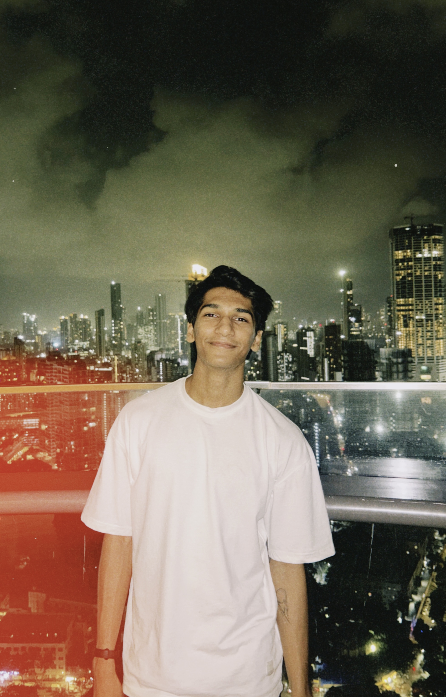
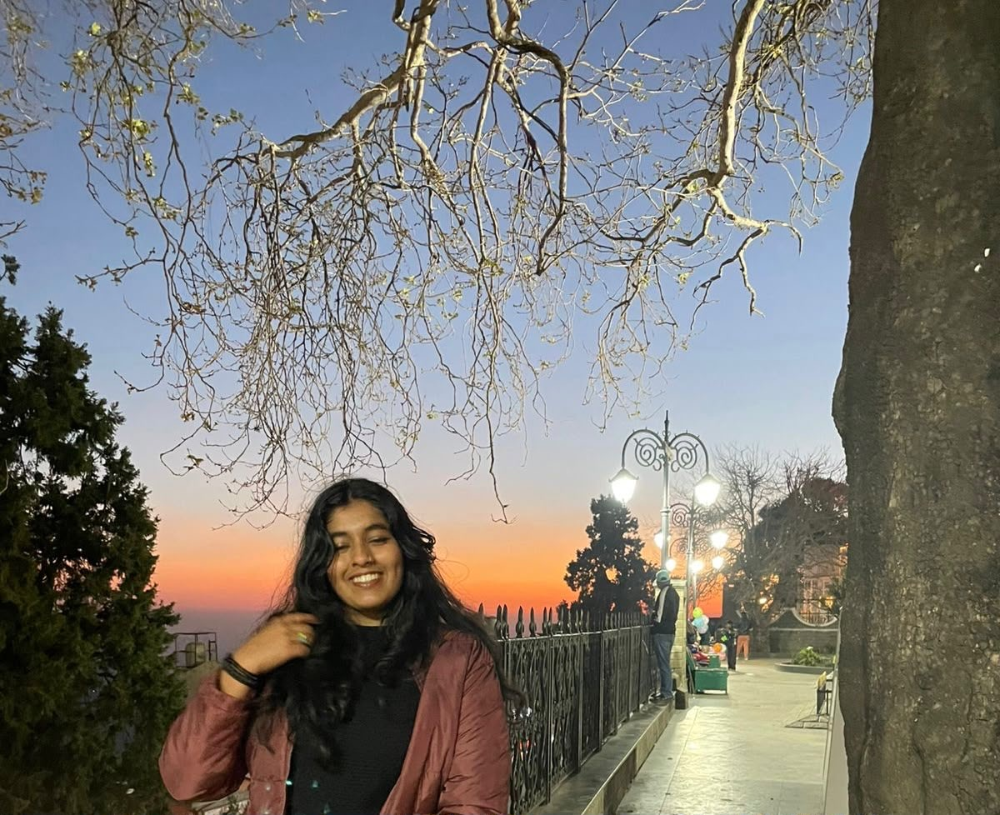

Research and Data Insights
We run real research projects — real data, real insights, and mentoring members to level up their skills.

SBShashwat Bhajanka
Research and Data InsightsShashwat leads research initiatives, guiding project teams through data analysis, visualization, and insight generation to produce meaningful outcomes.

SNSreenandana Nair
Research and Data Insights
Sree is a third year eco-pub major from Kerala with a growing interest in research and public policy. She gravitates towards academic spaces in the hopes to learn as much as she can in whatever time she has - which is never quite enough. She has research experience with J-PAL, NITI Aayog, and IIM Kozhikame.
When she is not translating data into actionable insights (data joke), she is either on her 13th rerun of the office, travelling, playing foosball or collecting nitbits for her wall in no particular order of preference. If you feel like we'd be pals, free to reach out to at sreenandana.nair_ug2024@ashoka.edu.in :)